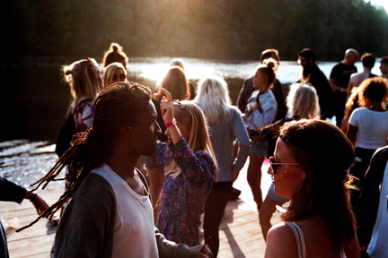

Taking The Goodness In, And Using It Well
 In the Underground House Music Community (House Heads Abound) it's stated adamantly, and particularly expressed "House is a feeling, and if you aint feeling the music, then it aint House!!!" I bear witness to that statement with my whole life. Whenever I need redemption, baptizing and stretching out my faith hands to godIs of my own uderstanding, I take my life to the dance floor and "I Get Lifted (Barbara Tucker)." I was introduced to "House Music" genre by my sister Veron. She systematically built an album collection (12" vinyls) that was to live for. My sister was an amazing dancer, she could Hustle (dance) like no tomorrow. Her dance partners would spin her around for long periods of time and she would always return on the right foot; it was mesmerizing to witness. My favorite style of dance via House Music is Free Style. Free Style is when you dance to House Music creating your own flavor and perform to the max your own dance brand. Sometimes I've come to the dance floor maybe to work out something going on within and have had to dance and sweat really hard 'til whatever it is has passed on to its resting place. I love dancing to House Music by myself on the dance floor. Theres no competing; Theres no bumping into other folks; Theres nothing but myself, godIs and the dj. House Music gives me life! There have even been times where Ive been asked to dance as a partner during the night, I just, I mean I may dance a few songs with others, but not all night. Thats not my dance style. I love it when its just me, godIs and the dj having their way with the House Music vibrations.
{kind=link}